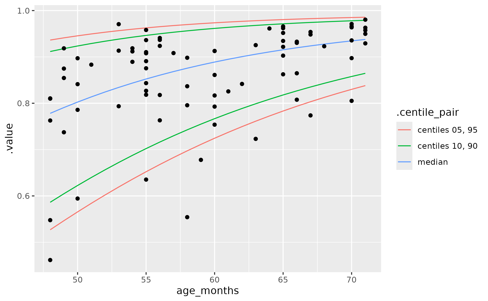

Fit a beta regression model (for intelligibility)
Source:R/model-intelligibility.R
beta-intelligibility.RdThe function fits the same type of GAMLSS model as used in Hustad and colleagues (2021) 🔓:
A beta regression model (via gamlss.dist::BE()) with natural cubic splines
on the mean (mu) and scale (sigma). This model is fitted using this package's
mem_gamlss() wrapper function.
Usage
fit_beta_gamlss(data, var_x, var_y, df_mu = 3, df_sigma = 2, control = NULL)
fit_beta_gamlss_se(
data,
name_x,
name_y,
df_mu = 3,
df_sigma = 2,
control = NULL
)
predict_beta_gamlss(newdata, model, centiles = c(5, 10, 50, 90, 95))
optimize_beta_gamlss_slope(
model,
centiles = 50,
interval = c(30, 119),
maximum = TRUE
)
uniroot_beta_gamlss(model, centiles = 50, targets = 0.5, interval = c(30, 119))Source
Associated article: https://doi.org/10.1044/2021_JSLHR-21-00142
Arguments
- data
a data frame
- var_x, var_y
(unquoted) variable names giving the predictor variable (e.g.,
age) and outcome variable (.e.g,intelligibility).- df_mu, df_sigma
degrees of freedom. If
0is used, thesplines::ns()term is dropped from the model formula for the parameter.- control
a
gamlss::gamlss.control()controller. Defaults toNULLwhich uses default settings, except for setting trace toFALSEto silence the output from gamlss.- name_x, name_y
quoted variable names giving the predictor variable (e.g.,
"age") and outcome variable (.e.g,"intelligibility"). These arguments apply tofit_beta_gamlss_se().- newdata
a one-column dataframe for predictions
- model
a model fitted by
fit_beta_gamlss()- centiles
centiles to use for prediction. Defaults to
c(5, 10, 50, 90, 95)forpredict_beta_gamlss(). Defaults to50foroptimize_beta_gamlss_slope()anduniroot_beta_gamlss(), although both of these functions support multiple centile values.- interval
for
optimize_beta_gamlss_slope(), the range ofxvalues to optimize over. Foruniroot_beta_gamlss(), the range ofxvalues to search for roots (target y values) in.- maximum
for
optimize_beta_gamlss_slope(), whether to find the maximum slope (TRUE) or minimum slope (FALSE).- targets
for
uniroot_beta_gamlss(), the target y values to use as roots. By default, .5 is used, so thatuniroot_beta_gamlss()returns thexvalue where the y value is .5. Multiple targets are supported.
Value
for fit_beta_gamlss() and fit_beta_gamlss_se(), a
mem_gamlss()-fitted model. The .user data in the model includes degrees
of freedom for each parameter and the splines::ns() basis for each
parameter. For predict_beta_gamlss(), a dataframe containing the
model predictions for mu and sigma, plus columns for each centile in
centiles. For optimize_beta_gamlss_slope(), a dataframe with the
optimized x values (maximum or minimum), the gradient at that
x value (objective), and the quantile (quantile). For
uniroot_beta_gamlss(), a dataframe one row per quantile/target
combination with the results of calling stats::uniroot(). The
root column is the x value where the quantile curve crosses the
target value.
Details
There are two versions of this function. The main version is
fit_beta_gamlss(), and it works with unquoted column names (e.g.,
age). The alternative version is fit_beta_gamlss_se(); the final
"se" stands for "Standard Evaluation". This designation means that the
variable names must be given as strings (so, the quoted "age" instead of
bare name age). This alternative version is necessary when we fit several
models using parallel computing with furrr::future_map() (as when using
bootstrap resampling).
predict_centiles() will work with this function, but it will likely throw a
warning message. Therefore, predict_beta_gamlss() provides an alternative
way to compute centiles from the model. This function manually computes the
centiles instead of relying on gamlss::centiles(). The main difference is
that new x values go through splines::predict.ns() and then these are
multiplied by model coefficients.
optimize_beta_gamlss_slope() computes the point (i.e., age) and rate of
steepest growth for different quantiles. This function wraps over the
following process:
an internal prediction function computes a quantile at some
xfrom model coefficients and spline bases.another internal function uses
numDeriv::grad()to get the gradient of this prediction function forx.optimize_beta_gamlss_slope()usesstats::optimize()on the gradient function to find thexwith the maximum or minimum slope.
uniroot_beta_gamlss() also uses this internal prediction function to find
when a quantile growth curve crosses a given value. stats::uniroot() finds
where a function crosses 0 (a root). If we modify our prediction function to
always subtract .5 at the end, then the root for this prediction function
would be the x value where the predicted value crosses .5. That's the idea
behind how uniroot_beta_gamlss() works. In our work, we would use this
approach to find, say, the age (root) when children in the 10th percentile
(centiles) cross 50% intelligibility (targets).
GAMLSS does beta regression differently
This part is a brief note that GAMLSS uses a different parameterization of the beta distribution for its beta family than other packages.
The canonical parameterization of the beta distribution uses shape parameters \(\alpha\) and \(\beta\) and the probability density function:
$$f(y;\alpha,\beta) = \frac{1}{B(\alpha,\beta)} y^{\alpha-1}(1-y)^{\beta-1}$$
where \(B\) is the beta function.
For beta regression, the distribution is reparameterized so that there is a
mean probability \(\mu\) and some other parameter that represents the
spread around that mean. In GAMLSS (gamlss.dist::BE()), they use a scale
parameter \(\sigma\) (larger values mean more spread around mean).
Everywhere else—betareg::betareg() and rstanarm::stan_betareg() in
vignette("betareg", "betareg"), brms::Beta() in
vignette("brms_families", "brms"), mgcv::betar()—it's a precision
parameter \(\phi\) (larger values mean more precision, less spread around
mean). Here is a comparison:
$$ \text{betareg, brms, mgcv, etc.} \\ \mu = \alpha / (\alpha + \beta) \\ \phi = \alpha + b \\ \textsf{E}(y) = \mu \\ \textsf{VAR}(y) = \mu(1-\mu)/(1 + \phi) \\ $$
$$ \text{GAMLSS} \\ \mu = \alpha / (\alpha + \beta) \\ \sigma = (1 / (\alpha + \beta + 1))^.5 \\ \textsf{E}(y) = \mu \\ \textsf{VAR}(y) = \mu(1-\mu)\sigma^2 $$
Examples
data_fake_intelligibility
#> # A tibble: 200 × 2
#> age_months intelligibility
#> <int> <dbl>
#> 1 28 0.539
#> 2 29 0.375
#> 3 31 0.221
#> 4 31 0.253
#> 5 32 0.276
#> 6 32 0.750
#> 7 32 0.820
#> 8 33 0.325
#> 9 33 0.446
#> 10 33 0.592
#> # ℹ 190 more rows
m <- fit_beta_gamlss(
data_fake_intelligibility,
age_months,
intelligibility
)
# using "qr" in summary() just to suppress a warning message
summary(m, type = "qr")
#> ******************************************************************
#> Family: c("BE", "Beta")
#>
#> Call: gamlss::gamlss(formula = intelligibility ~ ns(age_months, df = 3),
#> sigma.formula = ~ns(age_months, df = 2), family = BE(), data = ~data_fake_intelligibility,
#> control = list(c.crit = 0.001, n.cyc = 20, mu.step = 1, sigma.step = 1,
#> nu.step = 1, tau.step = 1, gd.tol = Inf, iter = 0, trace = FALSE,
#> autostep = TRUE, save = TRUE))
#>
#> Fitting method: RS()
#>
#> ------------------------------------------------------------------
#> Mu link function: logit
#> Mu Coefficients:
#> Estimate Std. Error t value Pr(>|t|)
#> (Intercept) -0.3414 0.2090 -1.634 0.104
#> ns(age_months, df = 3)1 2.4951 0.1896 13.162 <2e-16 ***
#> ns(age_months, df = 3)2 5.0171 0.4960 10.116 <2e-16 ***
#> ns(age_months, df = 3)3 3.1454 0.1746 18.017 <2e-16 ***
#> ---
#> Signif. codes: 0 ‘***’ 0.001 ‘**’ 0.01 ‘*’ 0.05 ‘.’ 0.1 ‘ ’ 1
#>
#> ------------------------------------------------------------------
#> Sigma link function: logit
#> Sigma Coefficients:
#> Estimate Std. Error t value Pr(>|t|)
#> (Intercept) -0.4380 0.1935 -2.264 0.0247 *
#> ns(age_months, df = 2)1 -1.8670 0.4175 -4.472 1.31e-05 ***
#> ns(age_months, df = 2)2 -1.6193 0.2120 -7.639 9.29e-13 ***
#> ---
#> Signif. codes: 0 ‘***’ 0.001 ‘**’ 0.01 ‘*’ 0.05 ‘.’ 0.1 ‘ ’ 1
#>
#> ------------------------------------------------------------------
#> No. of observations in the fit: 200
#> Degrees of Freedom for the fit: 7
#> Residual Deg. of Freedom: 193
#> at cycle: 8
#>
#> Global Deviance: -510.3592
#> AIC: -496.3592
#> SBC: -473.271
#> ******************************************************************
# Alternative interface
d <- data_fake_intelligibility
m2 <- fit_beta_gamlss_se(
data = d,
name_x = "age_months",
name_y = "intelligibility"
)
coef(m2) == coef(m)
#> (Intercept) ns(age_months, df = 3)1 ns(age_months, df = 3)2
#> TRUE TRUE TRUE
#> ns(age_months, df = 3)3
#> TRUE
# how to use control to change gamlss() behavior
m_traced <- fit_beta_gamlss(
data_fake_intelligibility,
age_months,
intelligibility,
control = gamlss::gamlss.control(n.cyc = 15, trace = TRUE)
)
#> GAMLSS-RS iteration 1: Global Deviance = -394.1232
#> GAMLSS-RS iteration 2: Global Deviance = -456.3473
#> GAMLSS-RS iteration 3: Global Deviance = -489.514
#> GAMLSS-RS iteration 4: Global Deviance = -506.4194
#> GAMLSS-RS iteration 5: Global Deviance = -510.1204
#> GAMLSS-RS iteration 6: Global Deviance = -510.3517
#> GAMLSS-RS iteration 7: Global Deviance = -510.359
#> GAMLSS-RS iteration 8: Global Deviance = -510.3592
# The `.user` space includes the spline bases, so that we can make accurate
# predictions of new xs.
names(m$.user)
#> [1] "data" "session_info" "call" "df_mu" "df_sigma"
#> [6] "basis_mu" "basis_sigma"
# predict logit(mean) at 55 months:
logit_mean_55 <- cbind(1, predict(m$.user$basis_mu, 55)) %*% coef(m)
logit_mean_55
#> [,1]
#> [1,] 1.627416
stats::plogis(logit_mean_55)
#> [,1]
#> [1,] 0.8358153
# But predict_gen_gamma_gamlss() does this work for us and also provides
# centiles
new_ages <- data.frame(age_months = 48:71)
centiles <- predict_beta_gamlss(new_ages, m)
centiles
#> # A tibble: 24 × 8
#> age_months mu sigma c5 c10 c50 c90 c95
#> <int> <dbl> <dbl> <dbl> <dbl> <dbl> <dbl> <dbl>
#> 1 48 0.761 0.296 0.527 0.586 0.778 0.912 0.936
#> 2 49 0.773 0.291 0.547 0.605 0.791 0.918 0.941
#> 3 50 0.785 0.286 0.566 0.623 0.803 0.924 0.946
#> 4 51 0.796 0.281 0.584 0.640 0.814 0.929 0.950
#> 5 52 0.807 0.276 0.602 0.656 0.824 0.934 0.953
#> 6 53 0.817 0.271 0.619 0.672 0.834 0.938 0.957
#> 7 54 0.827 0.266 0.636 0.687 0.844 0.943 0.960
#> 8 55 0.836 0.261 0.652 0.702 0.852 0.946 0.963
#> 9 56 0.844 0.256 0.668 0.716 0.861 0.950 0.965
#> 10 57 0.852 0.251 0.683 0.730 0.868 0.953 0.968
#> # ℹ 14 more rows
# Confirm that the manual prediction matches the automatic one
centiles[centiles$age_months == 55, "mu"]
#> # A tibble: 1 × 1
#> mu
#> <dbl>
#> 1 0.836
stats::plogis(logit_mean_55)
#> [,1]
#> [1,] 0.8358153
if(requireNamespace("ggplot2", quietly = TRUE)) {
library(ggplot2)
ggplot(pivot_centiles_longer(centiles)) +
aes(x = age_months, y = .value) +
geom_line(aes(group = .centile, color = .centile_pair)) +
geom_point(
aes(y = intelligibility),
data = subset(
data_fake_intelligibility,
48 <= age_months & age_months <= 71
)
)
}

# Age of steepest growth for each centile
optimize_beta_gamlss_slope(
model = m,
centiles = c(5, 10, 50, 90),
interval = range(data_fake_intelligibility$age_months)
)
#> # A tibble: 4 × 3
#> maximum objective quantile
#> <dbl> <dbl> <dbl>
#> 1 40.0 0.0222 0.05
#> 2 37.7 0.0225 0.1
#> 3 29.8 0.0217 0.5
#> 4 28.0 0.0153 0.9
# Manual approach: Make fine grid of predictions and find largest jump
centiles_grid <- predict_beta_gamlss(
newdata = data.frame(age_months = seq(28, 95, length.out = 1000)),
model = m
)
centiles_grid[which.max(diff(centiles_grid$c5)), "age_months"]
#> # A tibble: 1 × 1
#> age_months
#> <dbl>
#> 1 39.9
# When do children in different centiles reach 50%, 70% intelligibility?
uniroot_beta_gamlss(
model = m,
centiles = c(5, 10, 50),
targets = c(.5, .7)
)
#> # A tibble: 6 × 7
#> quantile target root f.root iter init.it estim.prec
#> <dbl> <dbl> <dbl> <dbl> <int> <int> <dbl>
#> 1 0.05 0.5 46.7 -3.31e-11 7 NA 0.0000610
#> 2 0.1 0.5 43.7 1.38e- 7 6 NA 0.0000610
#> 3 0.5 0.5 32.4 -1.91e- 9 5 NA 0.0000610
#> 4 0.05 0.7 58.2 -1.23e-11 7 NA 0.0000610
#> 5 0.1 0.7 54.8 -1.72e- 8 7 NA 0.0000610
#> 6 0.5 0.7 42.7 -2.51e- 7 7 NA 0.0000610